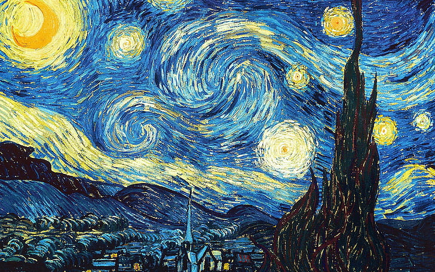
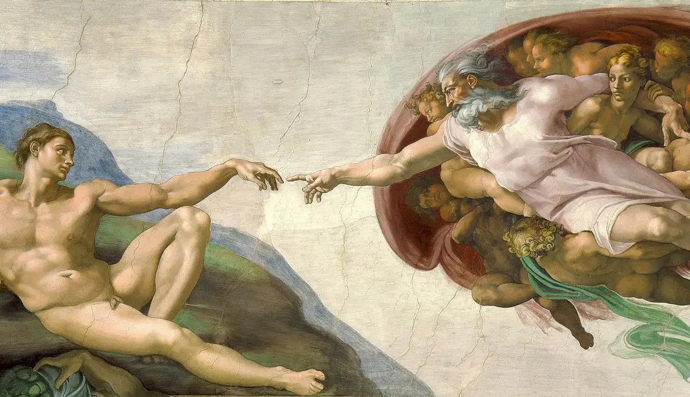

Journey through the masterpieces

Monalisa | Leonardo Da Vinci
The Mona Lisa, painted by Leonardo da Vinci during the Renaissance, is an enigmatic masterpiece that has captivated viewers for centuries. Completed between 1503 and 1506, it portrays a woman believed to be Lisa Gherardini, showcasing her serene expression and the subtle play of light and shadow. Displayed in the Louvre Museum, the Mona Lisa's timeless allure and the mystery surrounding her smile make it one of the most renowned and studied paintings in art history.

Starry Night | Vincent Van Gogh
"The Starry Night" is a mesmerizing landscape painting by Dutch post-impressionist artist Vincent van Gogh.
Painted in 1889, it depicts a night sky filled with swirling stars, a radiant crescent moon, and a sleeping village.
Van Gogh used thick brushstrokes and vibrant colors to convey his emotions and convey a sense of movement in the sky.

The Creation of Adam | Michelangelo
"The Creation of Adam" is a renowned fresco painting by Italian artist Michelangelo, part of the Sistine Chapel ceiling in Vatican City. Completed around 1512,
the painting depicts the biblical creation story, with God reaching out to touch the hand of Adam, who represents the first man.

The Persistence of Memory
"The Persistence of Memory" is a famous surrealist painting created by Salvador Dalí in 1931. It depicts a dreamlike landscape with melting clocks draped over various objects, including a tree and a distorted face. This iconic artwork explores themes of time, memory, and the subconscious, inviting viewers into a realm of fantastical and symbolic imagery.

The Storm on the Sea of Galilee
"The Storm on the Sea of Galilee" is a captivating painting by the Dutch Golden Age artist Rembrandt van Rijn. Completed in 1633, it portrays a dramatic scene of a violent storm on the Sea of Galilee, with terrified disciples struggling to survive. The painting showcases Rembrandt's mastery of light and shadow, capturing the intensity of the moment and evoking a sense of turmoil and awe. Sadly, the original painting was stolen in 1990 and remains missing, adding to its intrigue and mystique..

The Scream | Edvard Munch
"The Scream" is an iconic painting created by the Norwegian artist Edvard Munch in 1893. It depicts a figure standing on a bridge, their face contorted in agony, expressing a sense of existential dread. The painting's bold colors, swirling brushstrokes, and haunting subject matter have made it a symbol of human anxiety and the fragility of the human condition.

The Last Supper | Leonardo Da Vinci
"The Last Supper" is a renowned masterpiece painted by Leonardo da Vinci in the late 15th century. It portrays the final meal of Jesus Christ with his disciples before his crucifixion. The painting is celebrated for its intricate details, complex composition, and the nuanced expressions of the figures, capturing the emotional impact of the significant moment in Christian history.

Wanderer above the Sea of Fog
"Wanderer above the Sea of Fog" is a notable painting by the German Romantic artist Caspar David Friedrich, completed in 1818. It depicts a solitary figure standing on a rocky precipice, overlooking a vast and misty landscape. The painting evokes a sense of awe, contemplation, and the sublime, symbolizing man's confrontation with the power and vastness of nature, while also reflecting the introspective spirit of the Romantic era.

The Garden of Earthly Delights
"The Garden of Earthly Delights" is a renowned triptych painted by the Dutch artist Hieronymus Bosch around the year 1500. The artwork consists of three panels depicting a surreal and intricate composition filled with fantastical imagery, vivid colors, and symbolic elements. It explores themes of temptation, pleasure, and human folly, offering a complex and enigmatic portrayal of the human condition and moral ambiguity.

Girl with a Pearl Earring
"Girl with a Pearl Earring" is an iconic painting by the Dutch Golden Age artist Johannes Vermeer, believed to have been created around 1665. It portrays a young woman wearing a turban and a large pearl earring, gazing directly at the viewer with a sense of mystery and allure. The painting is celebrated for its exquisite use of light, intricate details, and the enigmatic expression of the subject, making it a timeless and captivating work of art.